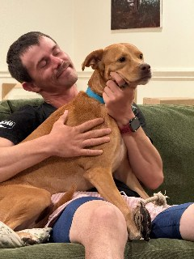

Start with the problem. Then choose the right kind of support.
Some problems need a focused practice. Some become clearer when other founders share what they have lived. Some reach the company, marriage, body, identity, and future at the same time and need a private relationship with enough continuity to work through all of it.
The Accelerator is twelve live weekly calls across 90 days for founders, coaches, and leaders whose success has created more responsibility, but not necessarily more freedom.
Each person brings a real question from the company or the life around it. We work with the decision, the fear or pattern underneath it, and the change that could make the insight real.
See what the calendar, recurring problems, and unfinished decisions reveal about the life the business is producing.
Work with frameworks for time, delegation, leadership, nervous-system capacity, purpose, freedom, and legacy.
Turn a conversation into a change in a role, boundary, system, handoff, calendar, or relationship, then return to what happened.
Hear what other people have lived without asking them to become the authority on your life.
12 weeks · Weekly live calls · Entry begins with the Royals Experience
The Accelerator is the entry into the Royals community. People who complete it may be invited into the ongoing Mastermind. There is no direct application to the Mastermind.

“Before I joined Royals, life was a mess. A new company on my back, three kids under five, and a marriage heading toward divorce. Royals showed me another way.”
One complicated season. A private relationship around it.
Some seasons are too intertwined for a single call or a group room. The company affects the marriage. The decision touches identity. The fear in the body changes the strategy. Private coaching gives us enough continuity to work with the whole thing.
Bring the decisions and experiences that are not ready for a team, board, or public room.
Look beneath urgency, control, avoidance, and over-responsibility before treating a reaction like a strategy.
Connect personal insight to the conversation, boundary, role, operating rhythm, or decision that needs to change.
Use the time between calls while the work is happening, rather than waiting for the next appointment to remember what mattered.
Six- or twelve-month relationship · Monthly calls · Private text channel
The work is referral-based, begins with an application, and remains intentionally limited so the relationship can hold the depth and access it requires.
“Working with Eric honestly changed everything for me. He helped me see my self-worth without needing constant external validation, and that shift has impacted every part of my life.”
They need a story that lowers the temperature, a question that makes the real conversation possible, and enough structure for people to do something with what they discover.
I speak, facilitate, and build selected live experiences for companies, communities, conferences, retreats, and leadership rooms. The work is shaped around what the room is already carrying and what would make the time useful.
Keynote conversations that connect success, freedom, family, purpose, leadership, and legacy.
Founder and leadership intensives around a live business, capacity, team, or transition question.
Facilitated exchanges that help people move beyond networking and into trust, truth, and useful conversation.
A practical next move the room can carry into its decisions, relationships, and work.
Keynotes · Leadership intensives · Retreats and room-opening facilitation
“This was magic. This was what I wanted from this community. I wanted to get to know people. Now I feel like I trust them.”
DealCon attendeeShared with Eric after his session
I built the private tools around problems I had to learn to see clearly: a decision crowded by other voices, a calendar that no longer matched what mattered, AI that needed better context, words that no longer sounded like me, and useful ideas I was letting disappear.
The Guided Start asks what needs attention and offers one place to begin. You can always choose a different one later.